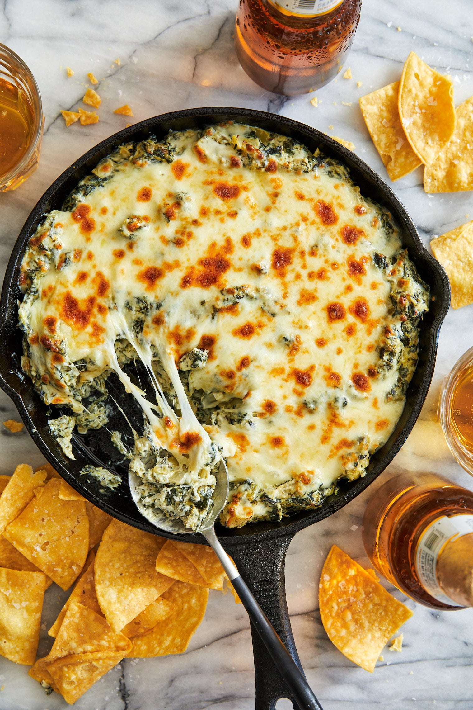

Hot Spinach Artichoke Dip

Description
Cheesy and fragrant. So delicous you won't even know it has artichokes!
Ingredients
- 1 block cream cheese
- Mayonnaise
- Clove of minced garlic
- Spices and seasonings
- One can drained and chopped artichoke hearts
- Thawed and drained frozen spinach
Directions
- Mix all indredients except mozzarella together
- Transfer mixture to baking dish and top with cheese
- Bake spinach artichoke dip in preheated oven until ready